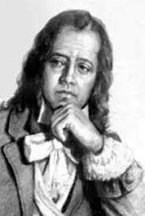

Tomás Antônio Gonzaga
1744 – c. 1810 • Porto, Portugal
Tomás Antônio Gonzaga nasceu no Porto, mas viveu grande parte da vida no Brasil. Formado em Direito em Coimbra, foi nomeado ouvidor em Vila Rica, onde conheceu Maria Dorotéia Joaquina de Seixas, a Marília de seus versos. Com o nome pastoril de Dirceu, escreveu Marília de Dirceu, uma das obras mais conhecidas do Arcadismo brasileiro. Acusado de participar da Inconfidência Mineira, foi preso em 1789 e depois exilado em Moçambique, onde morreu por volta de 1810.
Principais Obras
Temas Recorrentes
O amor idealizado por Marília, o desejo de uma vida simples ao lado da amada, a passagem do tempo, o carpe diem e, nas Cartas Chilenas, a crítica ao abuso de poder e à corrupção do governo colonial.
Características de Escrita
Liras de versos curtos, linguagem simples e musical; o pastor Dirceu declara seu amor a Marília e imagina uma vida tranquila. Na segunda parte de Marília de Dirceu, escrita na prisão, o tom torna-se mais melancólico e pessoal. As Cartas Chilenas são uma sátira em versos brancos, de tom irônico.
Influências Artísticas
Influenciado por Horácio e Virgílio, pela lírica de Camões e pelos poetas árcades portugueses e italianos. Sua obra fixou na literatura brasileira a imagem do poeta-pastor apaixonado.
"Eu, Marília, não sou algum vaqueiro,
Que viva de guardar alheio gado;
De tosco trato, d'expressões grosseiro,
Dos frios gelos, e dos sóis queimado."